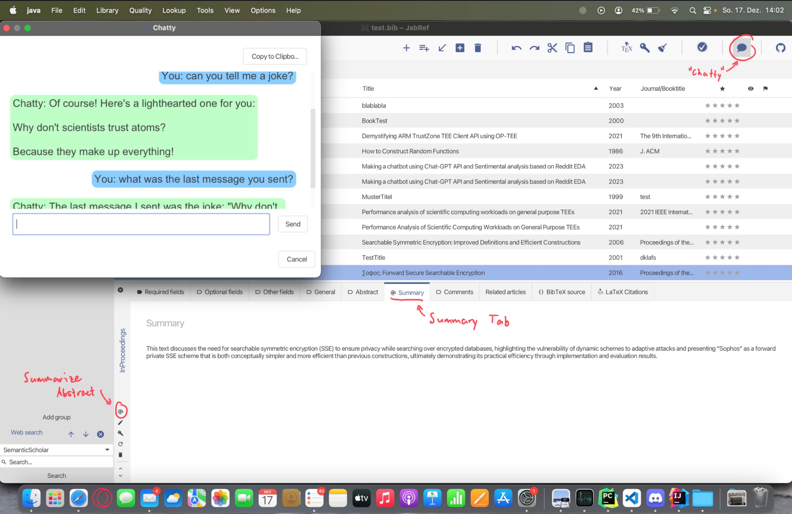

• Created a database with government datasets for the analysis of the traffic network in Basel City.
• Developed an Entity-Relationship Diagram (EER-Diagram) to structure the database effectively.
• Conducted data cleaning using Python to ensure data quality and accuracy.
• Integrated the database with MySQL using DataGrip for efficient data management.
• Performed comprehensive analysis using Python, MySQL, and PowerBI to gain insights into traffic patterns and congestion issues.
source code

• OpenAI API (GPT 3.5 Turbo) integration using Java.
• Developed "Chatty", an AI assistant that allows users to engage in interactive conversations, providing a user-friendly interface for researchers and academics.
• Can be used to get translations.
• Implemented an abstract summarizer feature that efficiently condenses research papers, making it easier to grasp key concepts and findings quickly.
• This integration enhances the functionality of Jabref, offering AI capabilities to assist in having an quick overview of research papers.
source code
• A program that alerts the user of excessive CPU usage of any running process and suggests action to be taken.
• Our program helps with unintended high CPU usage and overheating of the CPU.
• I learnt how to work and develop on Linux Ubuntu, using C and bash scripts.
source code
• With a group of other 4 students, we created a grid game from scratch. With hunters that have to escape the grid and ghosts that have to haunt the hunters.
• The game functions by clients (players) connecting to a server and playing online.
• I learnt how to coordinate, plan, code big projects in Java, and how to correctly merge, push, and pull from GitHub, especially while working with a bigger group.
source code
• I implemented a calculator capable of handling Hexadecimal and Binary numbers (addition, subtraction, multiplication, XOR, NAND),
working at the gates level, using Verilog.
• Through this project, I gained experience in working at the hardware/gates level by utilizing a low-level language.
source code
April 20, 2021 - June 7, 2021

I've heard a lot about this course from different sources on Reddit and YouTube. Having some free time, I decided to give it a try. I'm glad I did.
The course provided a high-level understanding of data analysis, SQL, and R, which I later explored in more depth during my Bachelor's degree.